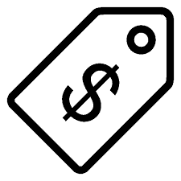
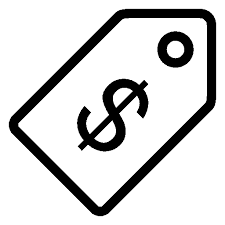

Hello! My name is Sierra. I was inspired to create this website by my Web Design teacher, Mrs. Kandi Young. I'm a sophomore in her web design class, my first ever web design class that is. We had an assignment to create a website and I chose to do a clothing site. What inspired me to do this site is a girl that graduated from West Ashley last year. On Instagram she sells clothes, some are past used, some are new. She made it look like a really good idea so I thought I would give it a try, for class that is.
To go into a little more detail on me, I'm 15. I'll be 16 next July. I'm from Johns Island. I have three other siblings, Steven, Styles, and Savannah. Then me Sierra. I'm the second oldest, Steven,s the oldest(18), the younger two Styles and Savannah are twins (12)! Yes, we're all S' but if you think just 4 S' are bad you should see the rest of the family. We have 3 Stevens! The 1st which is my Granddad goes by Big Steve, then my dad, goes by Jr. or Little Steve. Lastly, the 3rd my brother goes by just Steven. My aunt, my momma, dad, granddad, all my siblings, have an S name. My granny and uncle don't, theirs are M and K. What makes it crazier, everyone except my mom all have the same initials. We're all SED. Oh, well actually not my Aunt anymore she's a SEL, since June!
I don't work as of right now, but hopefully soon! Other things I want to start doing would be riding horses and kick boxing. Both are great workouts! School is a lot, not only do I have this site, but I have Biology, Creative Writing, and Geometry. With Biology, it's just hard having so much work and homework to keep up with, and then we have the EOC at the end of the semester. You would think Creative Writing wouldn't be bad, right? Just a few stories to write throughout the semester. NO. We have to write a 10 Chapter book! Yeah, you read that right. It's crazy. Then I have this website and other things to do on a day to day basis, in this class, which I don't mind at all. I never knew how much I liked this stuff until this class. It's really fun. I just have problems with coming up with the ideas for my site. Finally Geometry it's hard it's just a little math. I still have two and a half years to go. I got this!

 
